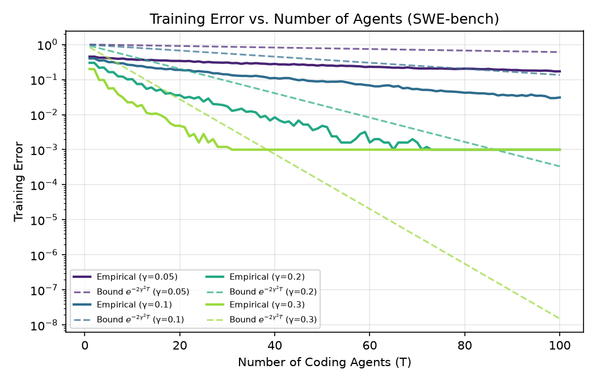
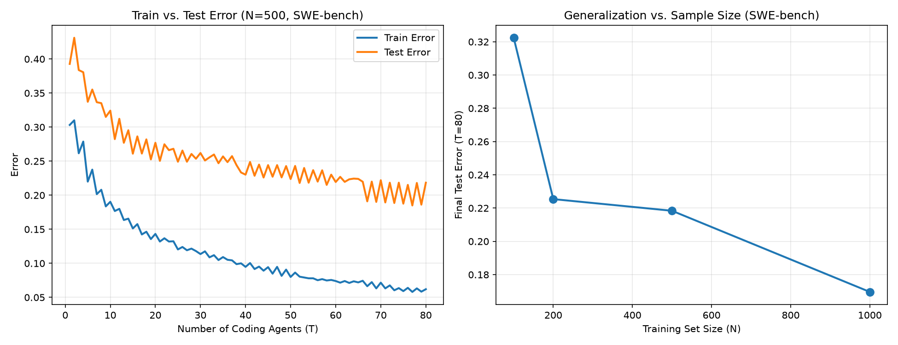
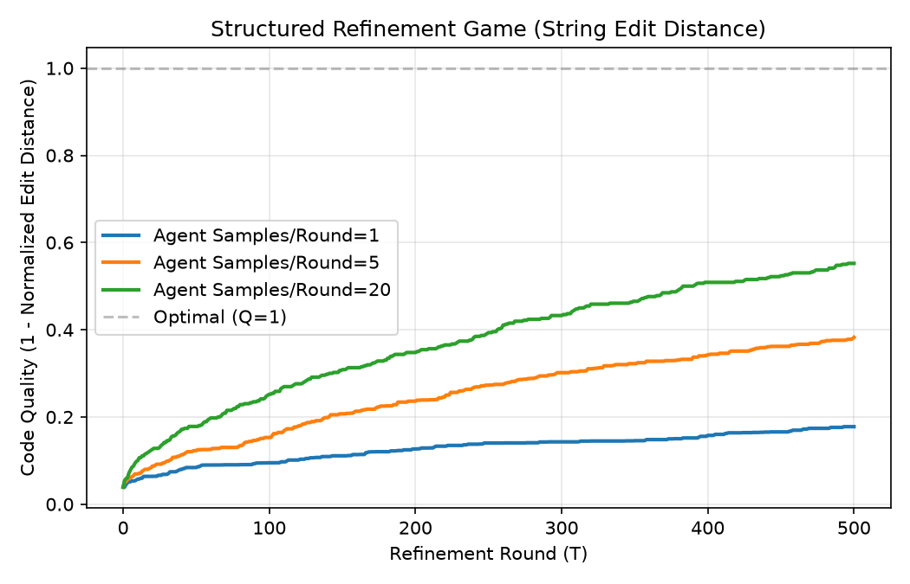
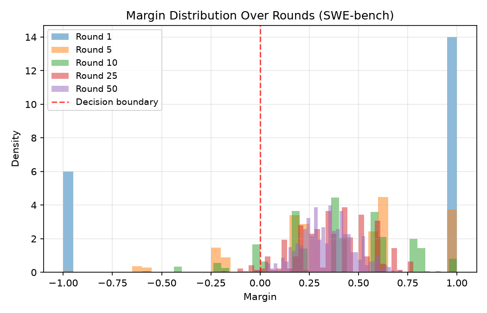
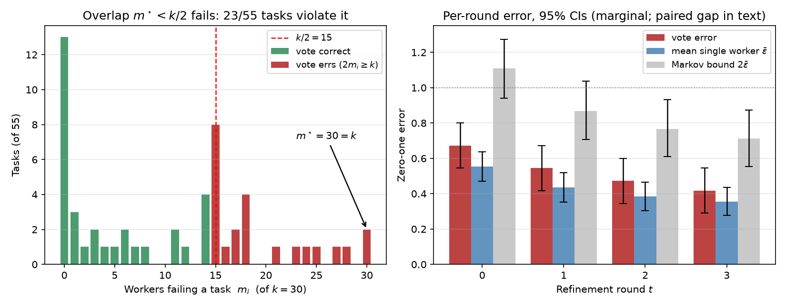
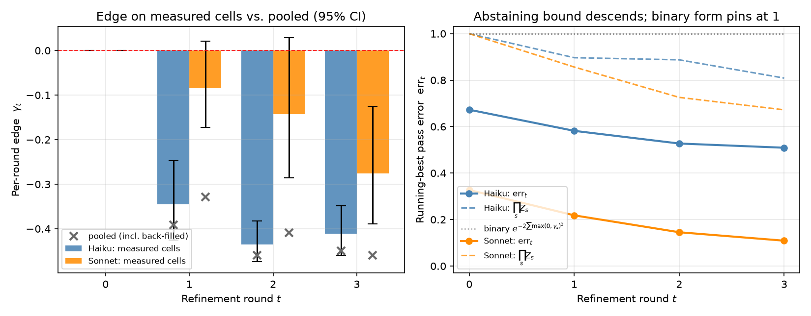
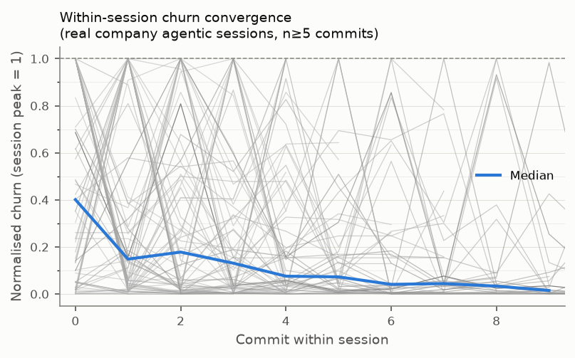
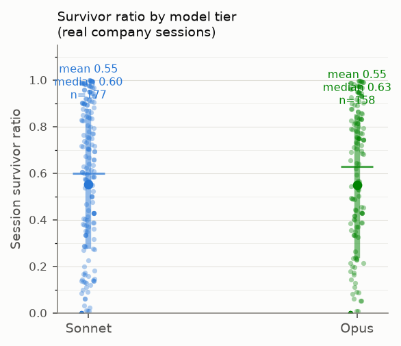
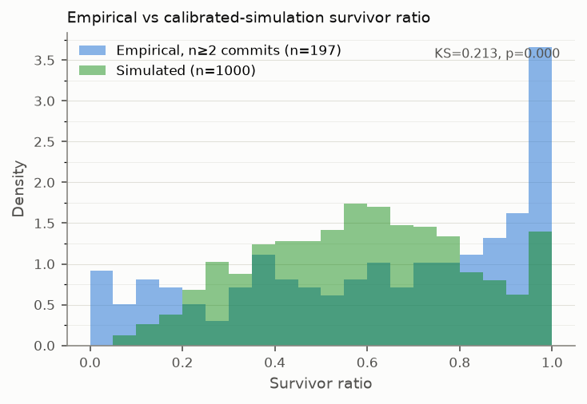
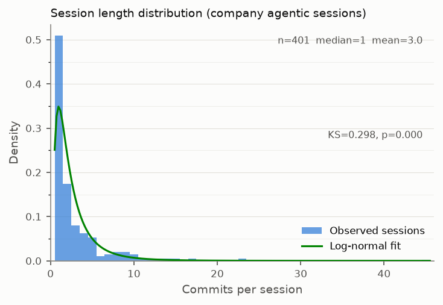

Abstract
An auditor who checks whether a system's weights are frozen is checking the wrong thing. We give a criterion for when iterative self-modification runs out of room. This stationarity dichotomy says that refinement hits strict diminishing returns whenever the agent's reachable set of edits stays fixed, and can escape only if that set expands. Rewriting scaffolding — tools, verifiers, decomposition — expands what an agent reaches without touching a weight, so frozen weights buy an eventual ceiling but no stationarity along the way. It also separates three regimes usually merged: search within a fixed class, test-time training that raises the ceiling itself, and scaffold rewriting between them. Audit the scaffold, not the checkpoint.
The same ceiling binds sideways. Best-of-k orchestration realizes the best worker's ceiling exactly: width buys rate, not budget. Re-consulting a fixed pool has a horizon computable in advance, since either some nonnegative combination of the pool already fits the work, or the edge hypothesis provably fails by round log(1/ε0)/2γ², uniformly over the schedule. Exhaustive, mutually exclusive, and decided by the pool alone. The one arrangement that does better, a weighted vote, needs diversity real workers lack: a vote is correct iff every task is failed by fewer than half the workers. On 6 same-family configurations (30 workers across seeds) the overlap sits at its ceiling: some task defeats every worker, and a majority fails 23/55 (42%) of tasks.
We obtain the criterion by reading refinement as gradient boosting on the residual error between draft and target, a patch or git diff, and then measure where that reading breaks. Patches compose rather than standing beside each other to be voted on, and failures overlap; both are properties of harnesses as currently built rather than laws about code, and together they specify one worth building.
Two empirical findings follow. Per-round improvement decays toward zero while remaining positive, so depth saturates: the bounded regime, measured. Capability is the lever that does move: over SWE-bench Lite (K = 55 tasks × 5 seeds, a 2×3 model-tier × feedback-mode ablation) the capability effect is large and significant (partial η² = 0.497, p < 0.0001) while feedback mode and the interaction are honestly-underpowered nulls (11% / 17% power at this K). And 401 production agentic-coding sessions place current practice in the bounded regime, churn decaying geometrically toward a survivor-ratio ceiling, measured on the 70 sessions long enough to show a trend, and a signature shared with a 9,395-session pre-AI human baseline, so it establishes the regime without identifying its cause. Separating those requires holding weights fixed while varying the scaffold, which is the experiment this data argues for.
What this paper does — and does not — establish
The contribution is a structural criterion, the invariant it says to track, and a build specification, not a confirmed empirical law.
Two limits scope everything below. The criterion is checkable only through a scaffold-immutability proxy, not a general estimator for the hypothesis class, which we lack, and the reasoning/tool-creation boundary that proxy rests on is not operationally sharp. And the production dynamics are consistent with the bounded regime without establishing that a fixed reachable class causes them: the same churn-decay shape appears in a pre-AI human baseline, so Finding 1 cannot carry mechanistic weight. The decisive experiment holds weights fixed while varying the scaffold, and is motivated here rather than delivered.
Within those limits, we claim to establish:
- Audit the scaffold, not the checkpoint. The refinement game (monotone improvement with saturation) and the stationarity dichotomy give strict diminishing returns whenever the reachable edit set stays fixed. Since rewriting scaffolding expands that set without touching a weight, frozen weights buy an eventual ceiling but no stationarity along the way. The criterion runs one way only: escape needs a uniform edge, so self-expansion is necessary and not sufficient, and an auditor who flags every self-modifying scaffold will mostly flag bounded systems.
- The same ceiling binds sideways. Best-of-k selection realizes maxi V*(W, Ci) exactly, an unconditional equality: width buys rate, not budget. We had conjectured a strict inequality here, on the intuition that a winning worker varying with the instance should cost something. The counterexample is two disjoint singleton classes with equal values, and Lean found it before we did, which is the concrete thing the formalization bought. The weighted vote that would beat selection needs diversity real workers lack. On our pool failure overlap sits at its maximum m* = k: some task defeats every worker, and a majority fails 42% of tasks. That second number is not merely suggestive, because an unweighted vote is correct iff every task is failed by fewer than half the workers, an exact condition rather than a sufficient one and machine-checked in Lean, so the majority-failure rate is the vote's error. No confidence interval is needed for a statistic sitting at its maximum. These are same-family workers: one vendor, two tiers and three prompt variants at temperature 0.25, and since the feedback-mode contrast is itself null, the pool's effective diversity is nearer two configurations than six. Low-temperature resampling of a single vendor is about as weak a test as one could field, so the result is close to a lower bound. It settles the pessimistic half and cannot speak to the optimistic one. Whether genuinely different model families clear the bar is the open question for anyone building a voting orchestrator, and this data cannot reach it.
- Where deployed loops break boosting. They fail its preconditions in two places we locate and measure: patches compose rather than standing beside each other to be voted on, and failures overlap too heavily for a vote to exploit. Neither is a law about code; both are engineering choices, so read prescriptively they specify a harness, unbuilt and ours included, precisely enough to build from: retain all T proposals, maintain an explicit distribution over specifications, and enforce m* < k/2.
- Re-consulting a fixed pool has a computable horizon. Run boosting over a fixed pool of k workers under any schedule: unless some nonnegative combination of the pool already fits the sample, the edge hypothesis provably fails by round log(1/ε₀)/2γ² — and if it does fit, some member keeps an edge γ = θ/2S against every distribution, fixed before the distribution is chosen. A pool is therefore not a renewable resource, and which side of the dichotomy it falls on is a property of the scaffold rather than of any weight.
- Transferred classical results. The AdaBoost training-error bound,
exponential convergence, margin generalization, and forward-stagewise equivalence carry
over to a hypothetical spec-reweighting loop. We claim no novelty for these and
state explicitly that no deployed loop, including our own, runs that algorithm. All
algebraic steps are machine-checked in Lean 4 (Mathlib), with zero
sorry.
The theorems behind the dichotomy are elementary: a bounded-monotone-sequence argument and the Archimedean property. That is the point. The claim is that the reachable class is the right invariant, not that saturation was hard to prove.
Part A — Stylized theoretical validation (decision stumps)
A controlled setting using SWE-bench problem-statement TF-IDF features and decision-stump weak learners confirms the transferred boosting mechanics: training-error decay, generalization, refinement-game saturation, and margin shift.




Part B — LLM refinement on SWE-bench Lite (regime characterization)
A real coding agent (mini-swe-agent) run over K = 55 SWE-bench Lite tasks × 5 seeds, in a controlled 2×3 model-tier × feedback-mode ablation (independent / blind / diagnostic self-refinement) against a digest-pinned Docker harness, characterizes the theory's regimes rather than testing it. The model-capability effect is large and significant (partial η² = 0.497, p < 0.0001) — the stronger tier solves 85–89% of tasks vs. 44–49% for the weaker tier. The feedback-mode and interaction effects are honestly-underpowered nulls (11% / 17% power at this K; 80% power would need roughly 7–8× the sample), not evidence that feedback content doesn't matter. What places Part B in the bounded regime is per-round improvement on the running best decaying toward zero (0.097 → 0.033 for the weaker tier, 0.156 → 0.029 for the stronger): improvement continues and shrinks, which is saturation measured rather than argued.
The pooled edge is an artifact of the harness, and reads backwards. The experiment stops calling the model on the round a task first passes and back-fills the remaining rounds with a hardcoded perfect score, so those rounds record no patch, no evaluation and no model call — 27.6% of the weaker tier's matrix and 53.9% of the stronger tier's. Because the edge statistic scores an unchanged round at −½, it charges every back-filled cell as a failure to improve, which tracks the solve rate rather than the refinement dynamics: the stronger tier back-fills more and therefore posts a more negative pooled edge while being the better refiner on every cell where a call was actually made. We report it for disclosure only and rely on the measured cells, where the stronger tier's first two intervals include zero — so we do not claim it fails the weak-learning condition. An unchanged round is in any case an abstention rather than an error: under Schapire & Singer's confidence-rated bound the transferred product still descends, to 0.81 and 0.67 over three rounds.
Two further qualifications.
First, the τ = 0.6 solve threshold counts the fraction of
FAIL_TO_PASS/PASS_TO_PASS tests passing, so those rates are
not SWE-bench resolve rates and should not be read against published ones. At
SWE-bench's own bar (τ = 1.0, every test passing) the identical aggregation gives 71–75% for
the stronger tier and 29–38% for the weaker one: the tier gap survives and neither tier sits
at a floor. Nothing else moves with τ, since the ANOVA's dependent variable is continuous
quality and γt compares consecutive rounds directly. Second, what the loop mostly does is
nothing: 80–95% of transitions leave quality unchanged overall, and 52–59% (weaker tier) /
13–21% (stronger tier) once the back-filled rounds are removed, against at most 2.9% lowering
it. Refinement turns idempotent, not harmful — which is a different claim from the
anti-correlation that ε > ½ means in AdaBoost.


Part C — Refinement dynamics in production (the regime, not its cause)
401 real production agentic-coding sessions — 1,211 Claude-authored commits across 23 of
OnCorps's production repositories. Only structural git metrics are extracted (diff sizes,
commit counts, model tier via Co-Authored-By: Claude trailers) — no code
content, file paths, or commit messages. Churn decays geometrically across commits
(ρ ≈ 0.77) and sessions converge to a measurable survivor-ratio ceiling: 70.0% of
multi-commit sessions (n ≥ 5) show decreasing churn, median late/early ratio 0.49,
and a commit-order permutation test rejects the commit-size-heterogeneity null
(p < 0.0001, n = 70).
What this does and does not establish. The descriptive claim is the safety-relevant one: current frozen-weight agentic coding sits in the bounded regime, refining like a saturating editor rather than compounding like a runaway process. It does not establish the mechanism. Applying the identical pipeline to a pre-AI window yields 9,395 human sessions whose churn-decay shape is essentially the same (ρhuman = 0.86 vs. AI-tier ρ ≈ 0.77) — geometric front-loading is not AI-specific, which is precisely why this finding cannot carry mechanistic weight. The survivor-ratio level does differ (ψhuman ≈ 0.39 vs. ≈ 0.55), and unlike the tier contrast that effect exceeds the repository and developer variance components after adjustment — but it is an era comparison, not a controlled one. Note also that the churn analysis rests on the 70 sessions with ≥ 5 commits: 50.9% of sessions are single-commit.




Key results at a glance
| Quantity | Value | Reading |
|---|---|---|
| Model-capability effect (Part B ANOVA) | η² = 0.497, p < 0.0001 | Huge, significant confirmed |
| Feedback-mode / interaction effect | 11% / 17% power | Honestly underpowered at K=55 not evidence of zero effect |
| Solve rate, τ = 0.6 (fractional passing) | 85–89% vs 44–49% | Stronger vs weaker tier not a SWE-bench resolve rate |
| Solve rate, τ = 1.0 (SWE-bench resolved) | 71–75% vs 29–38% | Tier gap survives the stricter bar; neither tier at a floor |
| Back-filled cells (no model call) | 27.6% / 53.9% | Weaker / stronger tier — rounds after a task first passes not measurements |
| Edge γt, t ≥ 1, measured cells | −0.35 → −0.41 vs −0.08 → −0.28 | Weaker vs stronger tier; the stronger tier's first two CIs include zero condition not rejected |
| Edge γt, pooled over all cells | CIs strictly < 0 | Disclosed aggregate — tracks the solve rate, not the dynamics artifact |
| Abstaining bound ∏sZs | 0.81 / 0.67 | Weaker / stronger tier over 3 rounds — descends, unlike the binary form |
| Per-round improvement (running best) | 0.097→0.033 / 0.156→0.029 | Decays toward zero saturation measured |
| Majority-failure rate (6 configs × 5 seeds) | 23/55 (42%) | Is the unweighted vote's error; m* = 30 = k diversity absent |
| Geometric churn decay (Part C) | ρ ≈ 0.77 | consistent with the bounded regime; n = 70 sessions |
| Capability gap (survivor-ratio ψ) | 0.55 vs 0.55 | Opus (n=158) vs Sonnet (n=177); gap = −0.003 |
| Gap significance | p = 0.93 / 0.91 | Permutation / MWU; 95% CI [−0.075, +0.069] not significant |
| Gap after multilevel de-confound | coef = +0.009, p = 0.82 | Adjusted for task type, repository, developer bounded null |
| Front-loaded-editing null | p < 0.0001 | Commit-order permutation rejects the null rejected |
| Pre-AI human baseline | ρ = 0.86, ψ ≈ 0.39 | 9,395 sessions: same shape, different level shape is not AI-specific |
| Session length | 1 / 3.0 / 45 | Median / mean / max commits per session; 50.9% single-commit |
The observational dynamics are consistent with the predicted saturation without confirming it, and the shared human signature is why. One tension we report rather than resolve: a survivor-ratio proxy too coarse to register the capability difference Part B measures at η² = 0.497 is correspondingly weak evidence for the regime it does register. The theory is offered as a structural criterion and the invariant it says to track, not a confirmed empirical law.
Citation
@misc{bobadillasuarez2026agentic,
title = {Audit the Scaffold, Not the Checkpoint: A Stationarity Dichotomy
for Recursive Self-Improvement in Agentic Coding},
author = {Bobadilla-Suarez, Sebastian and Suh, Bob and Fortin, Ryan},
year = {2026},
eprint = {2609.34924},
archivePrefix = {arXiv},
primaryClass = {cs.LG},
url = {https://arxiv.org/abs/2609.34924}
}